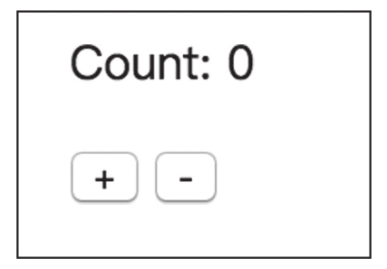
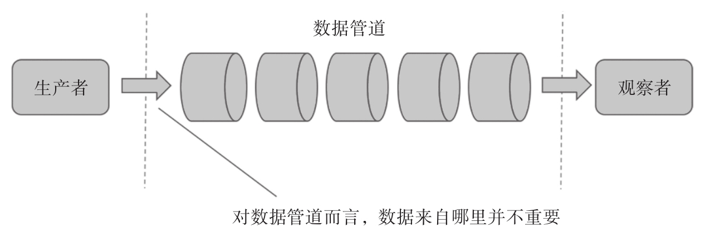
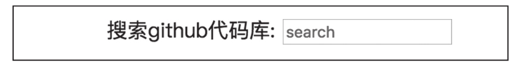
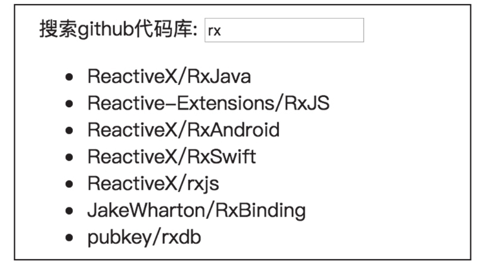

软件产品的质量可以从多方面进行评估，在任何一个方面软件表现出来的特质，几乎都可以用某种“性”来表示，对应的英文后缀就是-ability，我们熟知的有如下这些：
·可用性（Usability），看这个软件是不是好用。
·可维护性（Maintainablity），看软件是否易于维护。
·扩容性（Scalability），看软件是否可以应付更多的访问请求，是否可以增加更多的功能。
·可靠性（Reliability），看软件是否能够总是返回正确可靠的结果。
·可读性（Readability），代码是否易读。
……
这样的ability还可以写很多，不过，我们在这里重点关注软件的一种特性——可测试性（testability）。
如果一个软件的可测试性高，意味着可以很容易对这个软件进行测试，反之，会觉得测试这个软件非常困难。举个例子，对于工作流管理软件，需求上写的是工作任务进入某状态之后24小时不处理会自动结束，如果软件真的只在24小时之后才自动结束，那就真的太难测试了，为了测试这个功能，真的要等24小时吗？这显然对测试太不友好了。为了提高这个功能的可测试性，可以让系统配置工作任务自动结束的超时时间，即使没有这种需求，也要留下一个可以修改配置的方法，这样才有可能在短时间内完成测试任务。
上面说的是通用的可测试性，特定于我们开发者更关注的单元测试，可测试性体现在如下方面：
·可以一次只测试一个功能。
·可以很容易制造各种测试前提条件。
·可以很容易提高代码的测试覆盖率。
·可以很容易模拟被测对象依赖的模块。
现在我们已经掌握了TestScheduler这个控制时间的神器，还创建了辅助测试的工具包，是否意味着我们就提高了代码的可测试性了呢？
当然不是，TestScheduler只是在单元测试代码中使用的工具，而可测试性是被测试代码的属性，就像你有了一把更好的锤子，不代表你的钉子也就随之变得更好。
要提高代码的可测试性，还是要从被测试代码角度下功夫。
1.分割代码
单元测试，顾名思义一次只测试一个单元的功能，所以，如果一个单元的功能能够和其他单元分离得越彻底，那么测试这个单元也就越容易。
软件之所以能够提供复杂多样的功能，就在于能够把简单的功能组合起来，所以单元之间的依赖和纠结总是不可避免的，问题的关键是，我们能不能巧妙地组织代码，让各单元之间的依赖关系变得可以替换。
在RxJS中，应用函数式编程的思想，可以大大提高代码的可测试性，但是，这还不够。
我们用一个实际的例子来看使用了RxJS却依然可测试性不高的现象，我们的例子是简单的Counter网页应用，在网页中显示一个计数，初始为0，同时还显示一个+按钮和一个-按钮，用户点击+按钮可以让计数加1，用户点击-按钮可以让计数减1。
这个应用的界面如图12-7所示。

图12-7 Counter的界面
为了实现这个功能，在HTML部分有这样的布局：
<div>
<p>
Count: <span id="count">0</span>
</p>
<button id="plus">+</button>
<button id="minus">-</button>
</div>
总共有两个按钮，显示为+的按钮id是plus，显示为-的按钮id是minus，这是用户操作的对象；id为count的元素则体现用户操作的结果。
为了实现交互功能，使用RxJS的代码并不复杂，代码如下：
const plus$ = Rx.Observable.fromEvent(document.querySelector('#plus'), 'click');
const minus$ = Rx.Observable.fromEvent(document.querySelector('#minus'), 'click');
Rx.Observable.merge(plus$.mapTo(1), minus$.mapTo(-1))
.scan((count, delta) => count + delta, 0)
.subscribe(
currentCount => {
document.querySelector('#count').innerHTML = currentCount;
}
);
这段代码实际上也是大部分采用了RxJS的网页应用的套路：
·利用fromEvent方法从网页元素中获取用户操作引发的事件。
·利用一系列操作符来构成数据管道，产生新的数据流。
·给上面产生的数据流加一个Observer，根据数据来更新网页内容。
在上面的代码中，我们利用fromEvent从id为plus的按钮获取点击事件的数据流plus$，从id为minus的按钮获取点击事件的数据流minus$，这两个数据流plus$和minus$就是整个数据管道的源头。
使用RxJS有一个模式，就是把多个相关数据流合并（merge）之后再来处理，因为合并为一个数据流之后，就可以在下游集中处理数据，避免重复代码。在这个例子中，我们也是将plus$和minus$合并之后处理，不过，这两个数据流中虽然都是点击事件，处理方式却不相同，plus$中每个点击事件对总计数的贡献是加1，minus$中每个点击事件的贡献是减1，所以，在合并之前，先通过mapTo来把数据转化为它们预期的贡献。
plus$的mapTo参数是1，minus$的mapTo参数为-1，合并之后，新产生的数据流中的数据就只可能是1和-1，当plus按钮被点击，就产生一个数据1，当minus按钮被点击，就产生一个数据-1。
因为要考虑数据的累积作用，很自然我们想到了scan这个操作符，很直接地用加法来累积上游数据流的数据。当plus按钮被点击，scan存储的数据就会被加1；当minus按钮被点击，scan存储的数据就会被减1，而且每次上游推送数据下来，scan都会把更新的累积结果推送给下游。
最后，我们给scan产生的数据流添加一个Observer，在Observer中只要把被订阅数据流中推送的数据显示在id为count的网页元素中就可以了，这样就完成了这个Counter的全部功能。
这段JavaScript代码并不复杂，但是，当我们想要对其进行单元测试时，却立刻发现并不容易。
这段JavaScript的输入是用户在网页中的操作，输出是对网页中元素的修改，因为单元测试就是提供特定的输入，然后判断是否有预期的输出，对这段代码的单元测试就必须涉及对网页的操作。
我们先不要着急写代码，先分析一下一个单元测试要哪些步骤，如下所示：
步骤一 ：模拟一个网页环境，网页中包含id为count、plus和minus的相关元素；
步骤二 ：模拟用户对id为plus的按钮的点击事件；
步骤三 ：读取网页中id为count的内容，判断内容是否改变为1。
从步骤上来说，也并不复杂，但是在单元测试环境中，我们并没有网页，所以只能靠模拟，这是最麻烦的地方。
在开始搜索哪种网页模拟工具最方便最适合Mocha之前，我们先停下来问一下自己：有没有感觉这段代码的可测试性很低？
这并不是一个复杂的代码，却需要引入模拟网页访问的方式，这代码闻起来感觉味道就不对。对网页的访问，实际上就是对于外部状态的依赖，如果代码组织得好，应该就不需要受制于这些外部状态。
而且，这还只是依赖网页资源而已，如果代码中依赖于一个服务器端API，那么测试相关代码还要依赖于AJAX请求，那需要模拟的东西就更多了。
所以，我们在这条道路上停下来，不去探索如何模拟这样那样的外部资源，转而想一想有什么办法提高功能代码的可测试性。
我们回顾网页应用的套路，可以发现有趣的规律。利用fromEvent方法从网页获取用户操作事件的数据流，和操作符怎么处理这些用户操作事件没有什么关系，同样，Observer如何处理数据，和操作符怎么处理数据也没有什么关系。换句话来说，我们可以把这些功能拆开，放在不同的函数里面，然后分开进行单元测试。
如图12-8所示，把数据的生产者、数据管道和最终的Observer分离之后，“单元”的概念就不再是一个功能，而是一个功能中这三者其中之一，只要保证被分离的“单元”都能按照预期工作，那么剩下来只要保证它们合并在一起的逻辑正确就够了。

图12-8 数据管道的分离
合并这三个部分用的是RxJS，RxJS有自己的单元测试，久经考验，绝对不会出错，所以，我们只要保证这三个部分工作正常，合并起来就一定能够正常。
为了提高可测试性，我们改进Counter的代码，把功能进行分割，首先，我们来看产生数据源部分的代码，如下所示：
const createPlus$ = () => {
return Rx.Observable.fromEvent(document.querySelector('#plus'), 'click');
}
const createMinus$ = () => {
return Rx.Observable.fromEvent(document.querySelector('#minus'), 'click');
}
这两个函数的作用就是创造数据源，存在重复代码，可以进一步抽取共同代码，只使用一个函数：
const createClick$ = (id) => {
return Rx.Observable.fromEvent(document.querySelector(`#${id}`), 'click');
}
当然，我们如果需要单元测试这部分的代码，依然需要模拟一个网页的DOM结构，不过，先要问一个问题：这个函数需要单元测试吗？
无论是前面定义的createPlus$和createMinus$函数，还是改进后抽象的create-Click$函数，逻辑都极其简单，使用的document.querySelector是浏览器DOM API，使用的fromEvent是RxJS的操作符，这两者都已经在各种场合被反反复复使用无数次了，已经被证明绝对好用了，再去对它们做单元测试有多少意义呢？
然而，简单功能的组合依然可能发生偏差，可能开发者手一抖把使用参数id的代码写成了iid，但是这些错误通过代码审阅就可以发现，一个通过代码审阅就能发现问题的代码，有必要大费周章再模拟一个网页结构来单元测试吗？
当然，如果你要追求极致的代码自动检查，如果你要追求百分之一百的代码测试覆盖率，那你当然可以选择对这部分代码也做单元测试，只是要提醒一下，即使百分之一百的代码测试覆盖率，依然不能保证代码没有bug，为了统计数据好看而投入过多的时间和精力，并不是一个明智的做法。
如果项目本身真的对代码测试覆盖率有百分之百的要求，任何一个代码测试统计工具都有忽略一段代码的功能，比如，如果使用istanbul来统计代码测试覆盖率，可以利用注释中的ignore指令忽略一个函数的覆盖率：
/* istanbul ignore next */
const createClick$ = (id) => {
}
介绍完数据通道的源头，接下来我们来看数据通道的尽头。
作为消费数据通道的观察者，代码也相当简单，如下所示：
const observer = {
next: currentCount => {
document.querySelector('#count').innerHTML = currentCount;
}
};
和数据源一样，这里面的代码也是极其简单，除了遵从RxJS对Observer的格式要求，就是对浏览器API的调用，一点都不复杂，不值得去大费周章模拟网页结构进行单元测试。
所以，最后我们需要重点做单元测试的，就只剩下了由操作符组成的管道部分，代码如下：
const counterPipe = (plus$, minus$) => {
return Rx.Observable.merge(plus$.mapTo(1), minus$.mapTo(-1))
.scan((count, delta) => count + delta, 0)
};
counterPipe是一个纯函数，它既没有修改两个参数plus$和minus$，也没有其他副作用，返回的Observable对象内容也完全取决于输入参数，对这样的纯函数，单元测试十分容易。
注意
根据测试驱动开发的原则，应该先写单元测试用例，然后再写功能代码，但是，在这部分我们主要展示代码如何才能更容易被测试，所以不拘泥于严格的测试驱动开发形式。
利用之前我们定义的测试辅助工具包，对应的单元测试就更加简洁，下面就是测试代码：
describe('Counter', () => {
test('should add & subtract count on source', () => {
const plus = '^-a------|';
const minus = '^---c--d--|';
const expected = '--x-y--z--|';
const result$ = counterPipe(hot(plus), hot(minus));
expectObservable(result$).toBe(expected, {
x: 1,
y: 0,
z: -1,
});
});
});
因为用户的点击事件数据流是Hot Observable，所以我们用hot而不是cold来产生传递给couterPipe的Observable参数，用户可以有任何点击方式，在这个测试用例中，我们模拟的是用户首先点击+按钮一次，然后点击-按钮两次的动作，如下所示，因为单纯的点击动作不在乎数据值，反正最后都会被mapTo转化为1或者0，所以hot函数调用也不需要第二个参数：
const plus = '^-a------|';
const minus = '^---c--d--|';
const expected = '--x-y--z--|';
为了验证counterPipe产生的Observable对象是否产生预期的数值，toBe函数需要第二个参数，将expected中的x、y和z分别替换为1、0和-1。
可以看到，因为RxJS中的数据流可以代表在一短时间范围内发生的事件，所以，可以在一个测试用例中覆盖多个事件，如果不使用RxJS，一个测试用例中测试多种组合的话会显得十分笨拙。
现在我们有了createClick$，有了observer，又有了counterPipe，将它们串起来，就实现了Counter的全部功能：
counterPipe(createClick$('plus'),createClick$('minus'))
.subscribe(observer);
从这个例子中我们可以看出，编写高可测试性代码的一个方法，就是把逻辑尽量放到数据管道之中，把一些难以单元测试的逻辑推到边缘部分，让数据源和Observer的代码尽量简单，简单到无需单元测试，这样，我们就可以对真正的业务逻辑部分进行全面的单元测试。
2.输入输出操作的测试
在上面Counter这个例子中，我们知道了提高代码可测试性的一个重要方法，将RxJS程序分割为三个部分，把逻辑尽量放在操作符组成的数据管道中，这样只需要集中测试数据管道就可以了，但是，如果数据管道在执行过程中还涉及输入输出操作怎么办呢？接下来我们就用一个具体的例子来看如何提高这样代码的可测试性。
我们展示一个搜索的网页应用例子，功能就像是众多的搜索引擎一样，当用户在输入框中输入文字的时候，不需要点击一个什么“搜索”按钮，自动根据用户的输入来展示目前匹配的结果。
因为用户可以输入任何文字，所以根据输入文字进行匹配的工作不可能在浏览器端进行，需要调用服务器端API。在我们的例子中，利用github.com提供的API，根据用户输入文字搜索文字匹配的代码库。
网页的HTML部分代码如下：
<div> <label for="search-input">搜索GitHub代码库:</label> <input type="text" id="search-input" placeholder="search" /> <ul id="results"> </ul> </div>
其中id为search-input的输入框就是用户输入搜索文字的元素，搜索的结果显示在id为results的ul元素中，在没有任何用户输入的时候，没有任何结果，显示界面如图12-9所示。

图12-9 搜索github的界面
接着我们看JavaScript部分如何实现。
数据流的源头肯定是来自于用户的键盘操作，但是不应该监听输入框（input）元素的change事件，因为在输入框中连续输入文字并不会连续产生change事件，当输入焦点离开输入框的时候才触发change事件。我们希望用户每次按键都要做出响应，所以要直接监听键盘事件才行，keyup或者keydown事件都是选择，不过keyup更合适，因为用户松开键盘才表示真的下决心输入这个按键。
经过上一节的学习，我们已经知道了需要分离RxJS相关代码，所以不用走弯路，先确定我们要实现的三个部分，产生数据源的函数叫createKeyup$，处理搜索过程的函数叫searchRepo$，最终更新网页部分的对象叫observer，我们现在就可以把串接三部分的代码写出来：
searchRepo$(createKeyup$()).subscribe(observer);
产生数据源的函数createKeyup$代码如下：
const createKeyup$ = () => {
return Rx.Observable.fromEvent(document.querySelector('#search-input'), 'keyup');
}
接下来，就是如何处理createKeyup$产生的数据流，这里集中了这个程序的所有关键数据处理。
整体而言，数据管道要做的事情就是对键盘事件的Observable对象吐出的每个数据进行响应，获得当前输入框中的文字，然后根据这些文字内容去访问github.com的API服务器，获得匹配的代码库结果。
对于涉及调用服务器端API的操作，基本上都需要考虑到“节流”，也就是不要太频繁地访问服务器，不然会给服务器带来过重的负担，对于本地的网络和CPU资源也是一种浪费。实际上，GitHub的API对于一个客户端的访问频率也有限制，所以，我们没有必要对用户的每一个按键操作都访问一次GitHub的API，利用RxJS的debounceTime可以控制只要用户在一段时间内持续输入文字，就延迟发送API请求。
键盘事件Observable中的数据是DOM事件，包含一个target属性，代表事件相关的DOM元素，在这个例子中，相关的DOM元素就是id为search-input的输入框了，这种DOM元素有一个value属性，可以直接读取当前用户的输入文字。我们可以通过RxJS的map来提取这个文字，也可以使用pluck来提取，在这里，pluck比map更加简洁。
用户的输入是不可预料的，可能会在有意义的文字前后添加空格，比如，用户输入的字符串是“rx”，那也应该把rx前后的空白符删掉再继续，这个工作由map来处理比较合适。
用户在输入框中做了按键动作，可能是删除按钮，也可能只是按上下方向键盘，也可能一直输入的都是空格键，总之，输入框中的有意义的内容是空，这时候不需要做任何处理，用filter来过滤掉为空的数据。
最后，当一个按键事件经过了前面操作符的关卡，终于可以引发一个访问服务器API的结果了。在前面的章节中，我们介绍过，在数据流中做输入输出操作，一般要使用flatMap或者switchMap，对于这个例子，当用户输入第一个按键引发一个API访问，这个API访问还没来得及反馈结果的时候来了第二个按键事件，前一个API访问应该被放弃掉，转而启动第二个按键事件的API访问，这种场景应该使用switchMap。
数据管道的代码如下：
const searchRepo$ = (key$) => {
return key$.debounceTime(150)
.pluck('target', 'value')
.map(text => text.trim())
.filter(query => query.length !== 0)
.switchMap(query => {
const url = `https://api.github.com/search/repositories?q=${query}&sort=stars&order=desc`;
return Rx.Observable.fromPromise(fetchAPI(url));
});
};
我们使用了一个fetchAPI函数，这个函数使用浏览器支持的fetch函数，和RxJS无关，所以独立出来方便重用，对应的代码如下：
const fetchAPI = (url) => {
return fetch(url).then(response => {
if (response.status !== 200) {
throw new Error(`Invalid status for ${url}`);
}
return response.json();
}).then(json => {
return {
total_count: json.total_count,
items: json.items.map(x => ({
name: x.name,
full_name: x.full_name,
}))
};
});
}
Observer部分的代码根据searchRepo$函数产生的数据流修改id为results部分的HTML就可以了，代码如下：
const observer = {
next: (value) => {
document.querySelector('#results').innerHTML = value.items.map(repo => `<li>${repo.full_name}</li>`).join('');
}
};
到此时，网页功能已经完成，在界面中输入rx，可以得到图1210这样的结果。

图12-10 搜索结果界面
从结果中可以看到，在本书写作时，包含RxJS v4的代码库Reactive-Extensions/RxJS热度依然比RxJS v5的代码库ReactiveX/rxjs排名靠前，我衷心希望当读者看到这本书的时候，两者的热度已经调换过来了。
对于数据源和Observer部分，我们尽量减少代码，这样就没有必要进行单元测试。不过，按照上面的实现方式，测试产生数据管道的函数searchRepo$也很麻烦。
对于这个搜索功能，主要的问题是虽然用户的键盘输入驱动了整个过程，但是键盘事件序列并不是唯一的数据来源，因为在处理键盘事件过程的switchMap部分，还需要从服务器端API来获取数据。
我们肯定不希望单元测试运行过程中会引发对GitHub服务器的访问，因为GitHub服务器作为一个外部资源，随时可能会失败，实际上，即使GitHub服务器正常运行，它也可能会因为访问量控制的原因给我们的API请求返回无效的结果。另外，真正访问API的时间是无法确定的，这也就导致我们无法利用控制时间的TestScheduler来验证真正API返回的结果。
总之，上面的searchRepo$实现依然存在可测试性不高的问题，我们需要换一个角度来解析这个搜索场景。搜索这个场景，实际上不只是键盘事件这一个数据源，服务器API的返回也是一个数据源，既然都是数据源，对于操作符来说，本质没有什么区别。
本着数据源应该从数据处理管道分离出来的原则，我们很自然地想到，可以把产生数据源的部分抽象为一个函数，以参数的形式传递给searchRepo$，这样一来，我们在单元测试过程中就可以很容易替换数据源。
因此，可以考虑给searchRepo$的函数增加一个参数，如下所示：
const searchRepo$ = (key$, fetch$) => {
};
新增加的fetch$函数参数被调用的时候，会返回一个预期包含代码库列表的数据源，在实际产品中，会是调用GitHub服务器的函数实现，在单元测试中，就可以是一个模拟返回结果的函数实现。
这样一来，就解决了涉及访问服务器API代码的单元测试问题。不过，在search-Repo$还有一个挑战，就是使用了依赖时间的debounceTime操作符，debounceTime根据时间来做节流阀的效果，如果debounceTime的参数是100毫秒，那么让单元测试为此而等待是很不合适的。不过，我们有TestScheduler帮忙，这个问题也就迎刃而解。
可以让searchRepo$接受一个scheduler参数，让依赖于时间的操作符（如debounce-Time）使用scheduler参数。如果调用searchRepo$不指定scheduler，那debounceTime就使用默认的Scheduler实现；在单元测试中，传入TestScheduler实例，就可以完全控制debounceTime对于时间的理解。
顺道提一下，从提高代码的可定制性角度来看，我们把debounceTime的第一个参数也抽象出来，作为一个searchRepo$的参数dueTime，这样也方便单元测试用例的编写。
下面是高可测试性的searchRepo$实现的最终代码：
const searchRepo$ = (key$, fetch$, dueTime, scheduler) => {
return key$.debounceTime(dueTime, scheduler)
.pluck('target', 'value')
.map(text => text.trim())
.filter(query => query.length !== 0)
.switchMap(fetch$);
};
因为sheduler是最不可能被定制的参数，所以通常都放在最后一个位置。
接下来看如何对searchRepo$进行单元测试，测试用例代码如下：
test('searchRepo$ with customized due time', () => {
const keyup = '^-a-b---c-----|';
const expected = '------x---y---|';
const mockAPI = {
'r': 'react',
'rx': 'rx',
'rxj': 'rxjs',
};
const fetch$ = (query) => {
return Rx.Observable.of(mockAPI[query]);
};
const keyup$ = hot(keyup, {
a: {target: {value: 'r'}},
b: {target: {value: 'rx'}},
c: {target: {value: 'rxj'}},
});
const result$ = searchRepo$(keyup$, fetch$, 20, global.rxTestScheduler);
expectObservable(result$).toBe(expected, {
x: mockAPI['rx'],
y: mockAPI['rxj'],
});
});
测试用例中，我们会利用hot函数创造一个Observable对象keyup$，实现一个fetch$函数模拟API访问获得数据，对于这个测试用例，我们让“节流”的时间阈值为20毫秒，所以，在步骤二部分，调用searchRepo$只需要这样：
const result$ = searchRepo$(keyup$, fetch$, 20, global.rxTestScheduler);
这样调用searchRepo$，整个过程中不会涉及任何输入输出操作，也不依赖于时间的流逝，因为时间被最后一个参数global.rxTestScheduler操纵。
创造keyup$的代码如下：
const keyup = '^-a-b---c-----|';
...
const keyup$ = hot(keyup, {
a: {target: {value: 'r'}},
b: {target: {value: 'rx'}},
c: {target: {value: 'rxj'}},
});
通过hot产生的Hot Observable对象中每个数据包含属性target.value，代表每个用户当前的输入内容：
·第20毫秒（时间帧）吐出第一个事件，用户输入内容为r；
·第40毫秒吐出第二个事件，用户输入为rx；
·第80毫秒吐出第三个事件，用户输入为rxj。
我们有意让第一个数据和第二个数据之间间隔只有20毫秒，就是为了验证数据管道是不是真的有“节流”的效果，预期只有第二个事件才会引发对fetch$的调用。
在这个单元测试用例中，我们简化fetch$的模拟实现，根据输入参数从预设的对象mockAPI中找到对应的结果，然后用of这个操作符转化为Observable对象就可以了：
const mockAPI = {
'r': 'react',
'rx': 'rx',
'rxj': 'rxjs',
};
const fetch$ = (query) => {
return Rx.Observable.of(mockAPI[query]);
};
上面的fetch$只模拟了API返回的结果，但是没有模拟API访问的延时，实际的API访问可不会只要访问就立刻瞬间得到结果，总会有延时的，但是在后面我们再考虑这个问题，在这一个测试用例中我们就只是简单处理功能。
因为fetch$返回结果没有延迟，所以，我们预期的结果也不会产生延迟，因为debounceTime的存在，keyup$虽然产生三个数据，但是只有第40毫秒和第80毫秒的事件产生最终的结果。不过，因为debounceTime会延迟20毫秒，所以最终数据产生的时机是第60毫秒和第100毫秒：
const expected = '------x---y---|';
最后，我们通用expectObservable来判定最终的result$是不是预期结果，拿mockAPI中的数据来比较就可以：
expectObservable(result$).toBe(expected, {
x: mockAPI['rx'],
y: mockAPI['rxj'],
});
值得一提的是，mockAPI中的数据，长得可和GitHub搜索API返回的格式并不一样，因为我们并不关心这个API的返回结果格式，只要保证能够把返回的结果送出去就可以了。
上面的测试用例主要验证的是searchRepo$的确能够有“节流”的效果，接下来，我们再用一个测试用例来验证searchRepo$能够正确处理API访问延迟。
设想一下这样的场景，一个按键事件引发了一个API操作，这个API操作要花一段时间才能获得结果，但是，就在这个API操作返回之前，又一个按键事件发生了，这时候应该怎么办？
合理的做法，当然是取消掉前一个API请求，用新的用户输入发起一个新的API请求，即使对于浏览器的AJAX请求无法真正做到取消一个请求，当前一个API的请求返回了结果时，也应该把返回结果放弃掉，就好像不曾获得这个结果一样，这样才能保证逻辑的正确性。
为了达到上述效果，我们使用了switchMap，不过，还是需要一个测试用例验证才能让我们安心，对应的测试用例代码如下：
test('searchRepo$ with delay response', () => {
const keyup = '^-a--b------|';
const expected = '---------x--|';
const mockAPI = {
'r': 'react',
'rx': 'rx',
};
const fetch$ = (query) => {
return Rx.Observable.of(mockAPI[query]).delay(40, global.rxTestScheduler);
};
const keyup$ = hot(keyup, {
a: {target: {value: 'r'}},
b: {target: {value: 'rx'}},
});
const result$ = searchRepo$(keyup$, fetch$, 0, global.rxTestScheduler);
expectObservable(result$).toBe(expected, {
x: mockAPI['rx'],
});
});
在这个测试用例中，为了简化弹珠图，我们给searchRepo$的dueTime参数为0，也就是完全不需要“节流”的效果，这样可以专注于只测试API请求的取消。
为了模拟API访问的延时，我们利用了delay这个操作符，把从mockAPI转化而来的数据延时40毫秒推给下游，如下所示：
Rx.Observable.of(mockAPI[query]).delay(40, global.rxTestScheduler);
因为delay涉及时间，所以一样也要用上操纵时间的TestScheduler实例，值得注意的是，of这个操作符并不支持定制Scheduler，global.rxTestScheduler要引用在delay的调用中。
下面是keyup弹珠图的字符串表达形式，代表的数据流是这样的：第20毫秒产生第一个事件，代表用户输入为r；第50毫秒产生第二个事件，用户输入为rx：
const keyup = '^-a--b------|';
因为fetch$产生的数据有40毫秒延时，所以，a事件触发的fetch$调用，要到第20+40=60毫秒才产生数据，在此之前的第50毫秒，b事件发生，这应该让switchMap放弃掉第一个fetch$调用，并用新的用户输入调用一次fetch$，然后在第50+40=90毫秒处获得结果，所以，预期的弹珠图应该如下表示：
const expected = '---------x--|';
最后预期的x，应该对应的也是用户输入rx的结果：
expectObservable(result$).toBe(expected, {
x: mockAPI['rx'],
});
从计数器和搜索这两个例子中，我们不难看出，只要有合理的代码结构，加上TestScheduler的配合，RxJS相关代码的单元测试可以达到很高的可测试性。